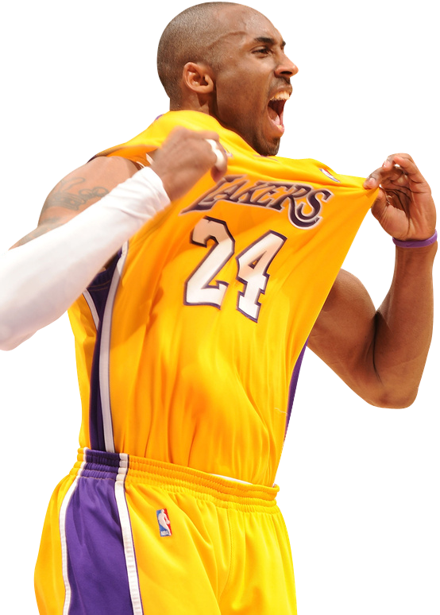

Unidos pelo esporte, movidos pela paixão!
O projeto tem como objetivo criar uma plataforma online que permita aos usuários cadastrar e localizar quadras de basquete disponíveis em diversas regiões.
A ferramenta facilitará a busca por espaços para a prática do esporte, oferecendo informações como localização, horário de funcionamento, disponibilidade e características das quadras.
